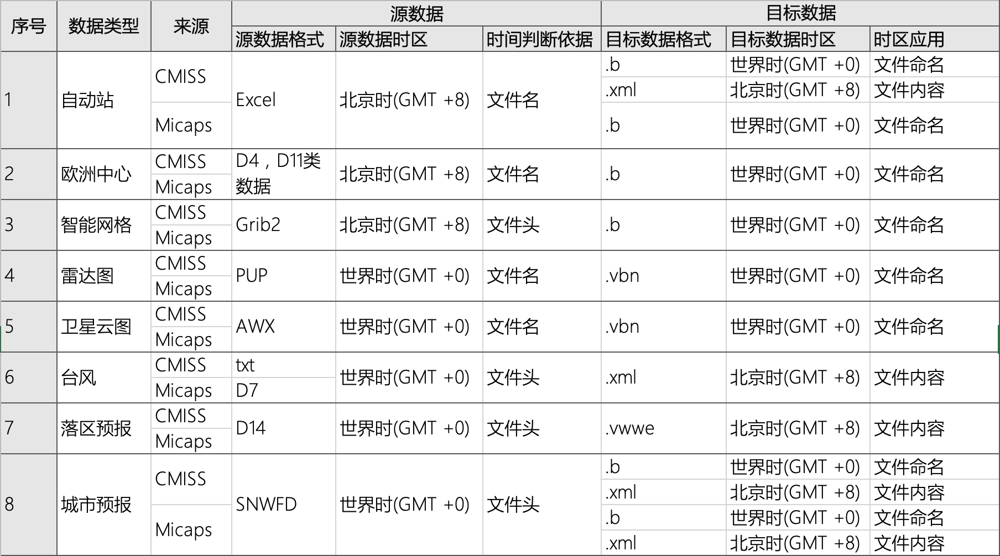
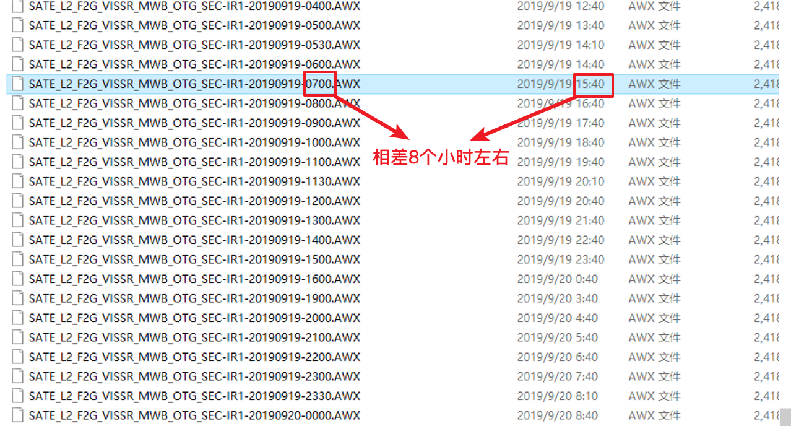

文档更新日期：2019-09-27
数据时间
目前常用的时间有两种，包括北京时（GMT +8）和世界时（GMT +0） 
世界时

- 如果数据文件名上的时间跟编辑时间差8个小时左右则为世界时间。
雷达数据
基本反射率产品是雷达基本观测量，单位为Dbz
备注：
pup雷达文件名格式:
20170622.1003001.02.19.10
年月日.时分秒.仰角（02表示15度）.产品.公里（目前常用230）
雷达数据配色条

参考链接：
卫星云图
目前普遍使用的是风云2号红外云图，以后会切换到风云4号红外云图。
参考链接:
地面观测
地面观测即自动站数据。
备注：自动站数据只有整点气温是当前时刻的，其它数据都是上一时次的数据。举例：13到的数据，只有整点气温是13点的，其它的数据都是12：00到12：59的数据，例如降水，一小时最高温。
地面观测、数值预报、雷达、云图、城镇预报、台风路径和旅游